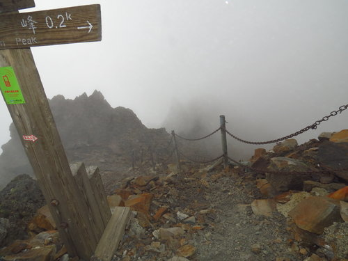
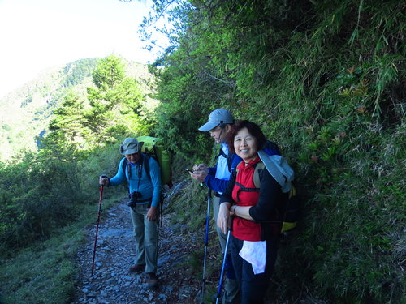
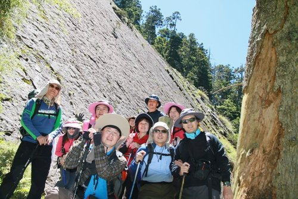
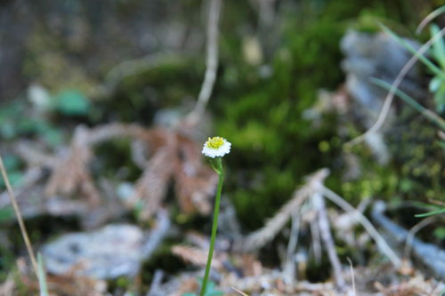

河東獅（人魚隊）登頂了～
台灣最高的地方～玉山山巔～
這次...可以拿來驕傲說嘴一輩子的開心事....
冷冽空氣下，是超強紫外線的照射
...忽陰忽晴忽雨…詭譎多變的雲海、陽光，
讓大家見識了第一高峰的豐富&難以捉摸
這張真的超美～～
相較於山上的美景
登頂前的500公尺------
是人間煉獄的Feel～～
大家攀著鐵鍊、僅挨著山壁，用微微發軟的手腳，小心翼翼地，一步一步往上走～～
心中狂喊著：天啊，我幹嘛要來這裡！！

撇開路程的甘苦先不談。
***********************************************************************
玉山登頂得由「緣份」與「組合之人」等要素綜合決定
，缺一不可。
這件事得從三年前開始說起，
話說三年前……
雨神X揚積極籌劃玉山登頂計畫...（報名者不乏本次參與者）
第一年...颱風？第二年...土石流...？
總之，在雨神貢獻下...玉山因而封山約半年之久...
終於玉山再度開放、排雲也有了新面貌...
***********************************************************************
今年，加入了兩位太陽女神（Y瑋、Z燕）
在眾家兄弟姊妹支持下，
過程中～
有排雲發包的問題、
三週前發生了6.5級地震(6/2)、
一週前有颱風....
其他二梯陸續變更或取消...
而我們，最後在台中店的中興、及宗霖領軍的楠梓店等生力軍加入後...
人的組合確定成就，
終於讓夢想起飛～～這...實在是太神奇了
（直到出發後，還發生嘉義高鐵站巴士顧路事件.....）
夜宿鹿林山莊一夜
適應高海拔、看星星，
喝了超哥贊助之...重心機超濃郁泥煤味WHISKY～～
配上培睿親手烹調的二鍋頭香烤牛小排、瑋瑋帶來的超大烏魚子....
天啊，這是甚麼玉山登頂啊～～簡直是太過份了
第二天一早6時許，在登山口集合了，
拍照、打卡，證明我們真的來了....這才只是序幕呢～
有了好緣份、對的人以外，
亮文贊助的能量飲料，令人感動，
就像大力水手的菠菜..... 更讓我們體力倍增～～感謝亮文好姊妹～～ 從登山口出發，
出發後， 前五百公尺....一路上坡...真要命！ 這根本就是企圖摧毀自信心的致命挑戰～ 幸好，在青松（輕鬆）樹的盡頭， 坡度開始緩和了.... 該脫的脫、該拿的拿， 大夥決定了接下來的行程將使用的裝備... 確認熱機已完畢～邁開大步前行～～ 據聞，像這樣的橋樑， 到了編號第82號時，就是排雲山莊了... 天啊～8.5K耶！！
雖然辛苦 幸虧一路上有美麗的風景&貼心的夥伴們幸福相隨...  數不清有多少次的休息及合影....

在2K、5K處，分別有一間編立門牌的豪華廁所～～
無水無電
前方有一個像水手掌舵的大輪子...
上完後，經過把輪子轉三圈的儀式～
聽說這樣就可以用大自然的力量分解一切....
5K里程碑，距離排雲還有3.5K
這裡的涼亭，
有雲龍大哥、大嫂備好的飲料、點心，
讓大家回復體力～～
河東獅（人魚隊）也在此熱身
有圖有真相！！
排雲前500公尺處，真男人出現了...
宗揚前、後、左、右，背了瑋瑋、彩芳、小燕以及自己的裝備....依舊健步如飛～～超鐵人&真男人是也！
就是這裡～
廣昇、超級鐵人顏六億、中興...以拔得頭籌之姿首先抵達 .......等到發冷...... 後面的肉腳、以及被拖累的勇腳們，才在此時逐一抵達～～ 此時，不離不棄的培睿，還在3、4K處照顧著高山症發作的牽手呢～～患難見真情～～慧慈，有眼光啊！ 排雲是才剛開放的新設施 藉著雲龍大哥的魅力&試營運的機會，大家終能如願。 號稱五星級的住宿享受...
～～～～～～～～～～～～～～～～～～～～～～～～～～～～～～～～～～～～～～～～～～
約中午12時許～～排～雲～山～莊～到了
冷到令人難忘的餐廳
1間10人的上下通舖 & 把你變成蠶寶寶的睡袋...
你覺得呢？
************************************************************************************************
排雲提供的午餐是大鍋麵條～～
山上的食物不知道為什麼，就是這麼美味！
************************************************************************************************
下午1時30分許....
攻頂，就是在這時候發生的.....
峻明、鈴...我們幫你圓夢囉～
再次回到排雲，
晚餐是咖哩飯～～真的粉好吃～～
餘悸猶存下，
是疲憊、劫後餘生的複雜心情，
大家不顧面子，一致做出決議：
明天睡到自然醒～原本計畫的西峰登頂取消！！
多麼痛快而明智的決定啊！！
但這也讓顏姓超鐵人陷入兩難.....
是要與大家一同自然醒呢？還是為了3客夏慕尼再登一次玉山頂？
結果，你猜？
*************************************************************************
夜晚的排雲，一樣有美麗的星空，但高山反應&整日的疲憊
呼喚著大家快快入眠...1人1顆安眠藥或高山藥，助你入眠～

*************************************************************************
斜陽&晨曦....是不分軒輊的美麗
凌晨四時許，
原本說好不去西峰的男士們...因為睡不著（還是另有隱情？）
紛紛起床（除了幾位病號的夥伴）
竟然往西峰出發....這些男士們...有意無意的....
又蒐集到一個百岳！
自然醒的女生們終於醒了，用完早餐～
回程了....

在不起眼的地方，處處有美麗的註腳。
回程還是8.5K，
平日照顧大家的峻明，這次終於給了大家報恩的機會...
直到下午3點，全部都回到了塔塔家停車場，全員到齊！
用完超級豐盛的山產...（可惜少了啤酒～）
在阿里山公路上，
居然開始下起滂沱大雨～～大家果然是受到庇佑ㄉ一群人
..................................................................................
完成了可以說嘴一輩子的夢想，
超鐵人再次被證明不是浪得虛名
繼假院長、查理布朗之後，司法界又多了一位紅蓮花....
（可憐的廣昇...）
在雲龍大哥連哄帶騙的精心安排下....
為人生夢想劃下美麗的句點。
美！美！美！人物美，風景美，讓人看了心境更美！ 河東獅的台灣大三鐵壯遊計劃， 自行車環島、登玉山，泳渡日月潭， 看來今年就要達陣了， 讚！讚！讚！